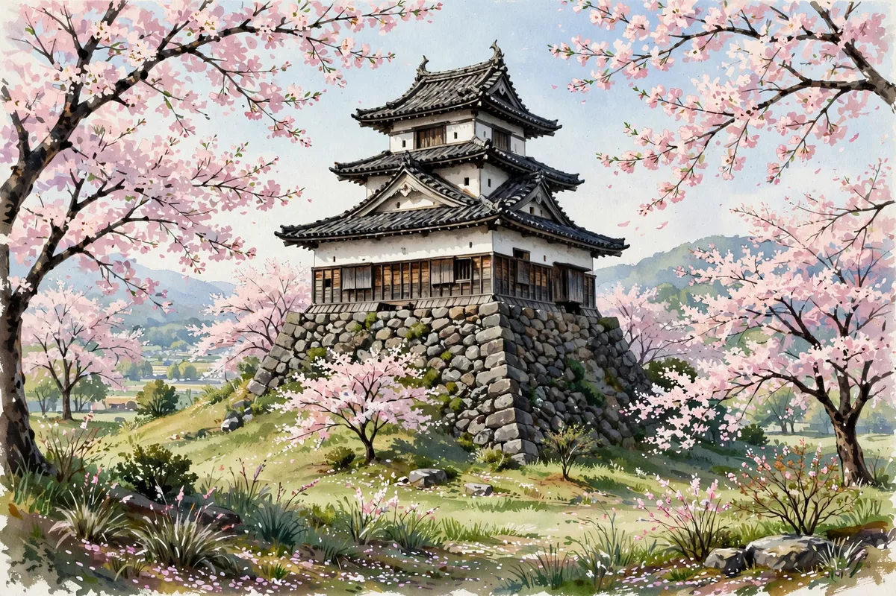

First Full Roof Repair in 71 Years — Maruoka Castle Removes Some 6,000 Stone Tiles in Its Ongoing Restoration

This is a news article bringing you the latest developments concerning castles and shrines. Source: a press release from Sakai City (November 10, 2026, carried by PR TIMES and Jiji Press). The keep of Maruoka Castle in Sakai City, Fukui Prefecture — one of Japan's 12 surviving keeps and an Important Cultural Property — is undergoing a large-scale repair that will take three years. On October 24, the Sakai City Board of Education held a public briefing on the preservation repair work, live-streaming from the work site to the conference room of the nearby Maruoka Castle tourist information center, 'Machiyori.' About 90 local residents attended.
The work is extensive: about 6,000 stone roof tiles are being taken down from the two-story, three-level keep, and all the components of the koran — the railed balcony that symbolizes this watchtower-style keep — have been removed. According to the city board of education, a large-scale repair covering the entire roof is the first in 71 years, since 1955. A repair with the keep enclosed in scaffolding is the first in 23 years, but removing every roof tile is a major undertaking not seen since the post-collapse dismantling repair. The keep collapsed in the Fukui earthquake of 1948 and was restored between 1951 and 1955. Partial roof repairs followed in 1973, 1981, and 2003.
In the live broadcast, site manager Ryoka Inoue of Shimizu Corporation streamed from the scaffolding, showing the topmost roof with nearly all its stone tiles removed, the shachi and demon roof tiles lowered onto the scaffolding, and the third-floor koran with its components taken away. She showed close-ups of roof damage where rain had rotted the boards and opened holes, and of how removed tiles and parts are stored, explaining the progress and methods of the repair step by step. The shachi normally sit about 18 meters up on the roof and the demon tiles about 13 meters up on the second-floor gables, so they can usually only be gazed at from below — the close-up footage from every angle drew one question after another from participants, such as 'So that's what its face looks like' and 'How bad is the damage?'
At Machiyori, removed stone tiles and first-floor floorboards were also on display, and about 100 people, including briefing participants, came to see them. The underside of a floorboard still shows the inked names of the town mayor and site manager who worked on the post-earthquake repair, as well as what appears to be a life-size sketch of a shachi. Each removed stone tile is checked one by one and sorted into those that can be reused, those that can be repaired and reused, and those that must be newly made, with a wooden ban-zuke tag attached so each one can be returned to its original place.
For exam study, the key point is how Maruoka Castle's keep is being preserved and repaired. Maruoka Castle was built in 1576 by Shibata Katsutoyo, and its keep is one of the 12 surviving keeps, designated an Important Cultural Property. Its stone-tile roof is a distinctive feature. In preservation repair, the basic approach is to remove damaged parts, repair them, and put sound parts back as they were. Seismic reinforcement based on a seismic diagnosis carried out from 2018 to 2020 is also planned: where the third-floor exterior walls were removed, structural plywood is being fitted as shear walls, then finished with plaster and weatherboards so the exterior looks just as before. See also the related article 'Maruoka Castle Streams Its Keep Repair Work Live — About 90 People Attend the Briefing.'
The repair work began in May this year and is expected to run until around the end of November next year. The keep can be entered on some days during the work, but entry is restricted during certain periods, and it is closed from November 9 to December 11. Before visiting, please check the latest information in the official guidance from the Sakai City Board of Education and Maruoka Castle. This site's event calendar also lists the Gifu Castle repair-site tour on November 14.
A word from Tsurugi: A major repair after 71 years, with each stone tile carefully sorted and put back where it belongs. A close-up of a shachi's face is something you can only see while the work is under way. I can't wait for the completion next year.
We also share castle and shrine news and exam updates on our official social media. Follow @tabi.kentei.jp on Instagram and Threads to keep up with the latest information.
Related article:Maruoka Castle Livestreams Its Keep Restoration: About 90 People Attend the Briefing
- Hikone Castle's Pines Get Their Winter 'Komomaki' Straw Wrapping — About 100 Trees, Removed and Burned Next March
- Kodaiji Temple Rebuilds Its Reception Hall — Burned Down in 1789, Reopening to the Public on November 14
- A Chinese Song Returns After 190 Years — Shuri Castle Celebrates Its Restored Main Hall with the 'Ukan-sen Hari' Boat Race
Recommended books for this article
Castle Guide
Samurai Castles: History / Architecture / Visitors' Guides
Hundreds of color photographs and close-up detail on Japan's most important surviving samurai castles — their history, design and military features, with guidance for visitors. The best single companion for castle sightseeing.
View at Barnes & NobleCheck the price at Barnes & Noble
Travel Guide
Lonely Planet Japan (Travel Guide), 19th Edition
Author: Lonely Planet
The standard Japan travel guide in its 19th edition — trip planning, itineraries, transport and on-the-ground detail. The practical backbone for a castle-and-shrine trip.
View at TargetCheck the price at Target
Book links on this page go to the retailers' product pages. Prices and availability are shown on the retailer's page.